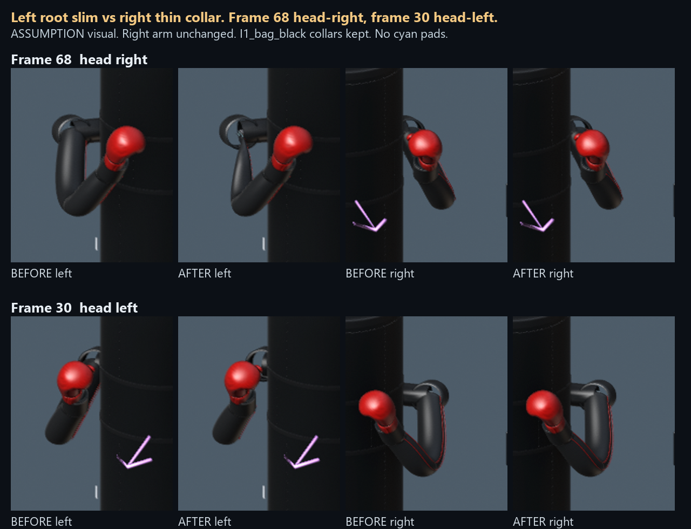
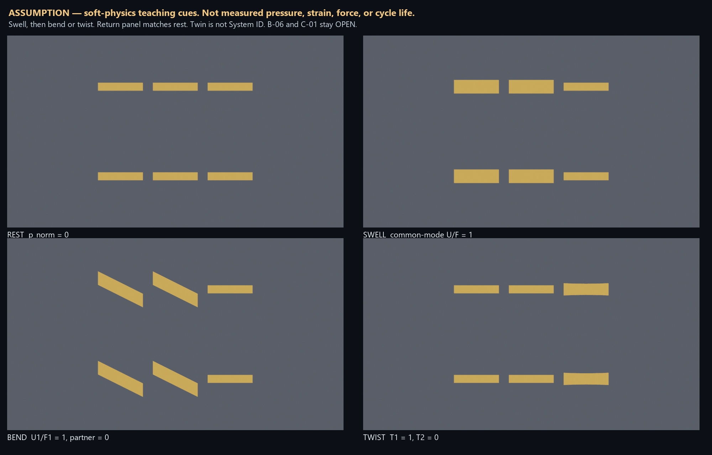
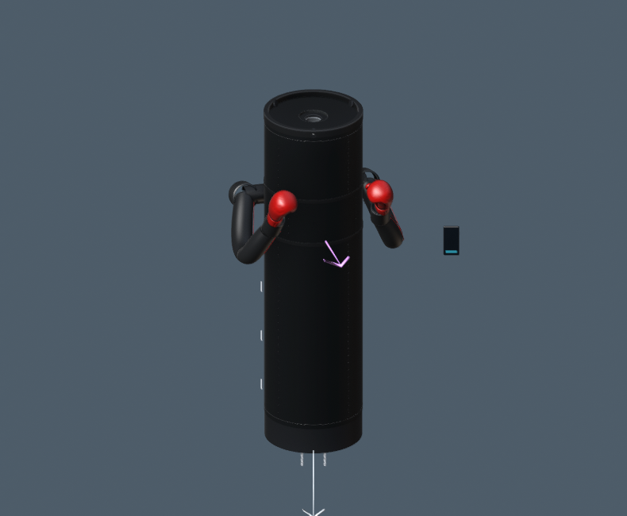
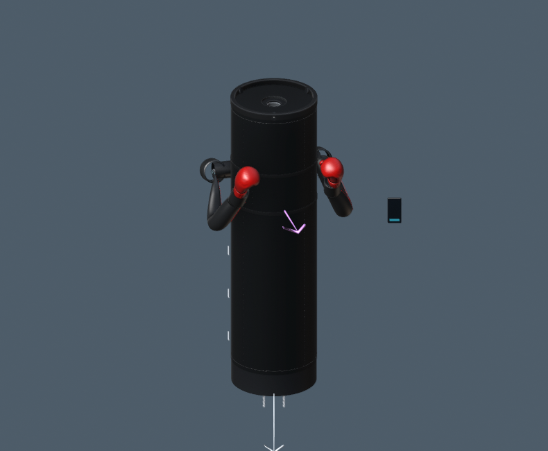

Track A only. 21 Sep 2026. Status: READY.
ASSUMPTION / DESIGN ESTIMATE. Not measured pressure, strain, force, or cycle life. Twin is not System ID. B-06 and C-01 stay OPEN.
READY_FOR_OLA · INDEX.md · NOTE
START_HERE · Assessment (ACCEPTED-A)


Before frame 68

After frame 68
